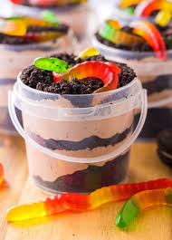

Description
This is a dessert recipe that's both delicious
and fun to eat! It's always a hit at a
child's birthday party or even a funeral for
your weird uncle Linus.
It's easy to make with a box of instant
chocolate pudding, some gummy worms, and the
internal rage you carry with you ever since your dad left. Its useful
for pulverizing the Oreo cookies if you
don't have a food processor.
Ingredients
- 1 box instant chocolate pudding
- 20 Oreo cookie sandwiches
- 1 package gummy worms
Steps
- Make the chocolate pudding according to the directions on the package.
- Disassemble the Oreo cookies, using a spoon to scoop off the cream from the middle.
- Put the cookie pieces in a plastic sandwich bag and crush them to crumbs using a rolling pin or any heavy lead pipes you have lying around.
- Fill your serving dishes first with a layer of chocolate pudding, then with a layer of cookie crumbles. Repeat until your serving dishes are filled. You might find it useful to put the pudding in a sandwich bag and cut off the corner to pipe the chocolate into the serving dishes.
- Top each serving dish with one or two gummy worms.